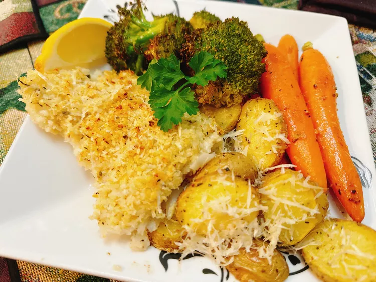

Parmesan-Crusted Baked Fish

Description
This Parmesan-crusted baked fish is delicious and can be made with any white fish.
Oven-baked at high temperature, with a lemony herbed panko and Parmesan topping,
dinner will be done fast.
Ingredients
- 1 lemon, divided
- 1 tablespoon olive oil, divided
- 1 clove garlic
- ¼ cup panko breadcrumbs
- ¼ cup grated Parmesan cheese
- 1½ teaspoons Catanzaro herbs
- 1 pound white fish fillets (I used cod)
- Salt and freshly ground black pepper to taste
- 1 tablespoon Dijon mustard
Steps
- Preheat the oven to 450°F (230°C). Line a baking sheet with foil.
- Cut lemon in half, and then into wedges. Squeeze juice from two lemon
wedges into a small bowl. Add 2 teaspoons olive oil. Using a microplane
grater, grate garlic clove into a paste; add to the bowl. Stir in panko,
Parmesan cheese, and Catanzaro herbs.
- Drizzle remaining 1 teaspoon oil onto the prepared baking sheet. Season
both sides of cod with salt and pepper; place on the baking sheet.
Brush cod with Dijon mustard, and press panko mixture evenly onto cod.
- Bake in the preheated oven until fish flakes easily with a fork, about
15 minutes. Serve with remaining lemon wedges.
Back to Home